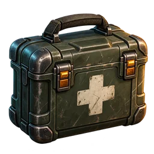
Припасы / 01
Аптечка
+60 здоровья
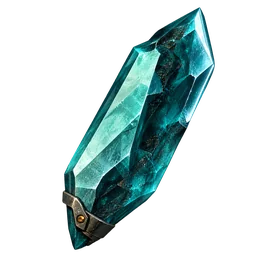
2 игровых кристаллаОдин экземпляр, без повторной покупки. Можно также найти или изготовить.
Россия, 2136. Земля молчит девять лет.
Экспедиция «Арес-7». Капсула «ТЕРРА-1» села в России — внизу споры, мутанты и тишина.
Стоп. Это игра в браузере. Без установки — телефон и ПК. Огромный мир, орды мутантов и четыре босса.
Ты вернулся с Марса. Внизу — пустые кварталы, затопленное метро и следы выживших. Найди припасы и людей, с которыми можно пережить следующую ночь.
Палка вместо оружия, пустой рюкзак и ночь впереди. Ищи еду и воду, обыскивай квартиры и подвалы, следи за радиацией и спорами.
В эфире звучит радиостанция «Рассвет». Спасай выживших, освобождай пленных и собирай общину вокруг костра.
Отстрой лагерь, защити его от набегов, освобождай районы один за другим. От одного человека до защищённого города.
Всё работает прямо в браузере, даже на телефоне. Ничего не нужно устанавливать.
Огромная процедурная карта из пяти поясов опасности: Окраина, Спальные кварталы, Мёртвый город, Красная зона и Эпицентр. Трассы, рынки, частный сектор, руины, метро и подвалы. Аномалии, пожары, радиация и событие «Выброс».
Четыре босса в своих логовах, у каждого несколько атак, фаз и кинематографичное появление. Атаки предупреждают о себе, поэтому от любой можно увернуться.
Начинаешь с палки. Дальше бита, мачете, катана, двуручник, копьё, потом револьвер, двустволка, автомат, рельсотрон, дрон и наплечная турель. Есть гранаты, мины и капканы.
Добыча сама летит в руки. Ненужное разбирай на ресурсы, а одинаковые предметы объединяй в более редкий. Заточка до +16 с риском. Чем выше редкость, тем больше силы, эффектов и радиуса.
Спасай выживших: инженера, медика, разведчика, охранника, фермера и торговца. Они работают, носят ресурсы, охраняют лагерь и берут ежедневные контракты.
Ставь стены, ворота, вышки, турели и ловушки. Отбивай набеги и осады, держи блокпосты на дорогах.
Руби деревья и смотри, как они падают. Вскрывай двери, ломай преграды ломом, перелезай заборы, обыскивай ящики. Ищи подвалы и запертые комнаты с лучшей добычей.
Два виртуальных стика и крупные кнопки. Радиальное колесо оружия замедляет время, пока ты выбираешь. Работает и вертикально, и горизонтально. На ПК — клавиатура и мышь.


Одна аптечка за игровые кристаллы. Обмен доступен в игре: пауза → «Снабжение».
Без реальных денег. Кристаллы даёт первый подходящий сюжетный обыск после активации; за ранее завершённый обыск награды нет.

+60 здоровья

2 игровых кристаллаОдин экземпляр, без повторной покупки. Можно также найти или изготовить.
Кадры из игры. Нажми, чтобы увеличить.
 Руины в огне на закате
Руины в огне на закате
 Трасса
Трасса
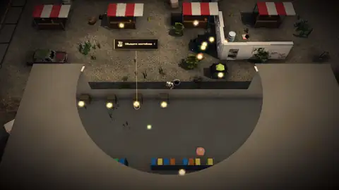
Рынок у дороги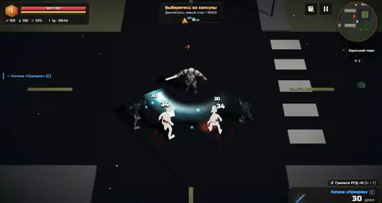
Ночной бой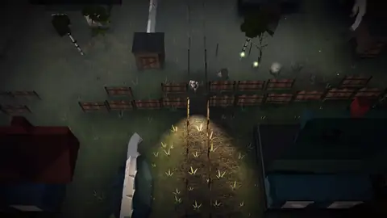
Частный сектор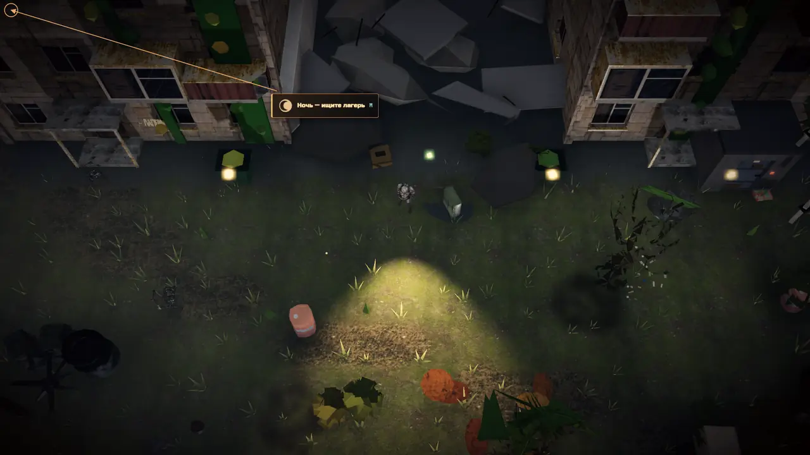
Ночью фонарик — твой лучший друг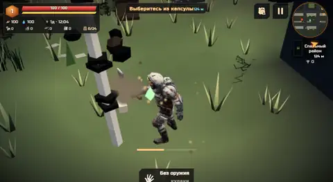
Рубка деревьев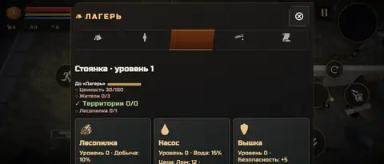
Лагерь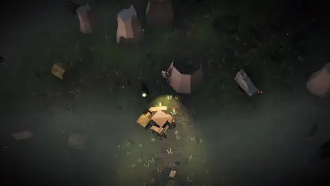
Мёртвые кварталы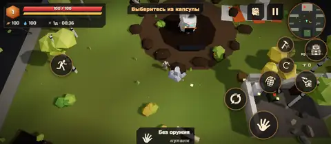
Интерфейс на телефоне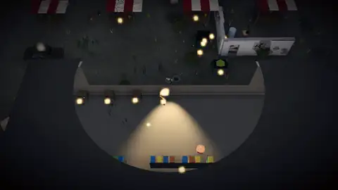
Рынок ночью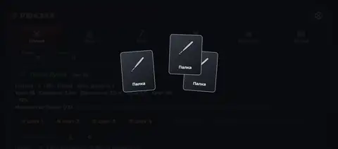
Слияние предметовЧетыре противника со своими атаками и фазами. Готовь снаряжение перед встречей.

Грибной Колосс из сросшихся тел под пластинами трутовика. Бьёт «молотом гнили», выдыхает споры и пускает корни-шипы.

Бывший учёный с раздутым мозгом. Управляет зомби через грибные нити, швыряет обломки и создаёт иллюзии-двойников.

Лабораторный тиран в броне на болтах и с гидравлической перчаткой. Таранит, хватает, а на половине здоровья сбрасывает броню.

Скелет на нитях мицелия в короне-кокошнике из рёбер. Косит руками-косами и поднимает костяной рой.
А в подземельях ждут Мясник с «Гагаринской» и Матка спор.
Игра в раннем доступе и обновляется часто. Сроков не обещаем, обещаем честно показывать прогресс.
«Терра» — игра о выживании в России будущего. Исследуй руины, находи припасы и помогай выжившим построить лагерь.
Нам важно мнение каждого игрока. Если нашёл баг, придумал оружие или босса или хочешь помочь с тестами на своём телефоне, напиши нам.
Вся игра — это один HTML-файл. Он работает офлайн и открывается в любом современном Chrome, без сервера и движка.
Мир собирается из детерминированных чанков по 48 м. Для анимации дальних врагов используются вершинные текстуры. Модели сжаты meshopt, изображения — в WebP.
Интересно, как всё устроено, есть идеи по оптимизации или нашёл проблему с производительностью на своём устройстве? Открой issue и укажи модель телефона и браузер.
Капсула уже приземлилась. Палка лежит рядом. Сможешь дожить до утра?